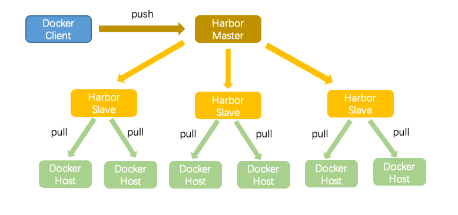
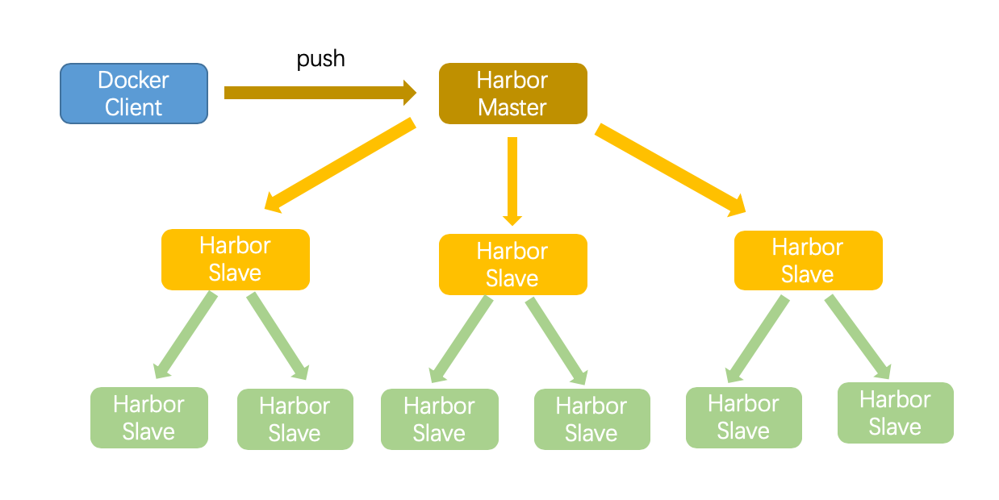
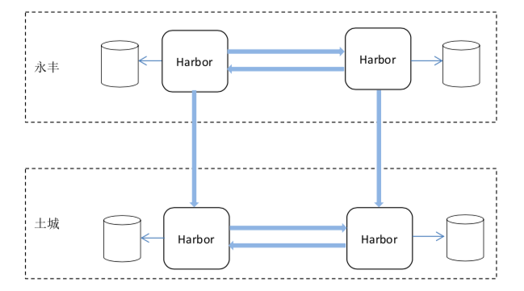

- 00 开篇词 微服务，从放弃到入门.md
- 01 到底什么是微服务？.md
- 02 从单体应用走向服务化.md
- 03 初探微服务架构.md
- 04 如何发布和引用服务？.md
- 05 如何注册和发现服务？.md
- 06 如何实现RPC远程服务调用？.md
- 07 如何监控微服务调用？.md
- 08 如何追踪微服务调用？.md
- 09 微服务治理的手段有哪些？.md
- 10 Dubbo框架里的微服务组件.md
- 11 服务发布和引用的实践.md
- 12 如何将注册中心落地？.md
- 13 开源服务注册中心如何选型？.md
- 14 开源RPC框架如何选型？.md
- 15 如何搭建一个可靠的监控系统？.md
- 16 如何搭建一套适合你的服务追踪系统？.md
- 17 如何识别服务节点是否存活？.md
- 18 如何使用负载均衡算法？.md
- 19 如何使用服务路由？.md
- 20 服务端出现故障时该如何应对？.md
- 21 服务调用失败时有哪些处理手段？.md
- 22 如何管理服务配置？.md
- 23 如何搭建微服务治理平台？.md
- 24 微服务架构该如何落地？.md
- 25 微服务为什么要容器化？.md
- 26 微服务容器化运维：镜像仓库和资源调度.md
- 27 微服务容器化运维：容器调度和服务编排.md
- 28 微服务容器化运维：微博容器运维平台DCP.md
- 29 微服务如何实现DevOps？.md
- 30 如何做好微服务容量规划？.md
- 31 微服务多机房部署实践.md
- 32 微服务混合云部署实践.md
- 33 下一代微服务架构Service Mesh.md
- 34 Istio：Service Mesh的代表产品.md
- 35 微博Service Mesh实践之路（上）.md
- 36 微博Service Mesh实践之路（下）.md
- 微博技术解密（上） 微博信息流是如何实现的？.md
- 微博技术解密（下）微博存储的那些事儿.md
- 结束语 微服务，从入门到精通.md
- 阿忠伯的特别放送 答疑解惑01.md
- 阿忠伯的特别放送 答疑解惑02.md
26 微服务容器化运维：镜像仓库和资源调度
专栏上一期我给你讲解了容器化技术解决了单体应用拆分为微服务后，所带来的服务测试和发布运维复杂度提升的问题，可以说容器化技术天生就是为微服务而生。但微服务容器化后又带来了一个新的挑战，那就是容器如何运维的问题。
为什么微服务容器化的运维又成了新问题？
对于大部分业务团队来说，在进行容器化以前，服务都是部署在物理机或者虚拟机上，运维往往有一套既有的运维平台来发布服务。我就以微博的运维平台JPool来举例，当有服务要发布的时候，JPool会根据服务所属的集群（一般一个业务线是一个集群）运行在哪个服务池（一般一个业务线有多个服务池），找到对应的物理机或者虚拟机IP，然后把最新的应用程序代码通过Puppet等工具分批逐次地发布到这些物理机或者虚拟机上，然后重新启动服务，这样就完成一个服务的发布流程。
但是现在情况变了，业务容器化后，运维面对的不再是一台台实实在在的物理机或者虚拟机了，而是一个个Docker容器，它们可能都没有固定的IP，这个时候要想服务发布该怎么做呢？
这时候就需要一个面向容器的新型运维平台，它能够在现有的物理机或者虚拟机上创建容器，并且能够像运维物理机或者虚拟机一样，对容器的生命周期进行管理，通常我们叫它“容器运维平台”。
根据我的经验，一个容器运维平台通常包含以下几个组成部分：镜像仓库、资源调度、容器调度和服务编排。所以，关于微服务容器化运维的内容，我会分为3期，今天先来看容器运维平台的镜像仓库和资源调度，后面两期会介绍容器调度、服务编排和微博容器运维平台的建设。
镜像仓库
Docker容器运行依托的是Docker镜像，也就是说要发布服务，首先必须把镜像发布到各个机器上去，这个时候问题就来了，这个镜像该放在哪？如何把镜像发布到各个机器上去？这时候你就要依靠镜像仓库了。
镜像仓库的概念其实跟Git代码仓库类似，就是有一个集中存储的地方，把镜像存储在这里，在服务发布的时候，各个服务器都访问这个集中存储来拉取镜像，然后启动容器。
Docker官方提供了一个镜像仓库地址：https://hub.docker.com/，对于测试应用或者小规模的业务可以直接使用。但对于大部分业务团队来说，出于安全和访问速度的需要，都会搭建一套私有的镜像仓库。那么具体该如何搭建一套私有的镜像仓库呢？下面我就结合微博的实践，和你聊聊这里面的门道。
1.权限控制
镜像仓库首先面临的第一个问题就是权限控制的问题，也就是说哪些用户可以拉取镜像，哪些用户可以修改镜像。
一般来说，镜像仓库都设有两层权限控制：一是必须登录才可以访问，这是最外层的控制，它规定了哪些人可以访问镜像仓库；二是对镜像按照项目的方式进行划分，每个项目拥有自己的镜像仓库目录，并且给每个项目设置项目管理员、开发者以及客人这三个角色，只有项目管理员和开发者拥有自己镜像仓库目录下镜像的修改权限，而客人只拥有访问权限，项目管理员可以给这个项目设置哪些人是开发者。
这个权限控制就跟大厦办公楼的管理类似，你要进入大厦里的一个办公室，首先必须具备进入大厦的权限，这个权限是在大厦里所有办公的人都有的。然后你还得具备大厦里你办公室所在楼层的门禁，这样才能进入办公室。不同楼层的人权限不同，只能进入自己楼层的办公室。如果某个办公室有新来的员工，首先要给他分配大厦的进入权限，然后还要这个办公室的管理员给他分配办公室的权限。是不是这样讲权限控制就好理解一些了呢。
2.镜像同步
在实际的生产环境中，往往需要把镜像同时发布到几十台或者上百台集群节点上，单个镜像仓库实例往往受带宽原因限制无法同时满足大量节点的下载需求，这个时候就需要配置多个镜像仓库实例来做负载均衡，同时也就产生镜像在多个镜像仓库实例之间同步的问题了。显然通过手工维护十分繁琐，那有什么好的办法吗？
一般来说，有两种方案，一种是一主多从，主从复制的方案，比如开源镜像仓库Harbor采用了这种方案；另一种是P2P的方案，比如阿里的容器镜像分发系统蜻蜓采用了P2P方案。微博的镜像仓库是基于Harbor搭建的，所以这里我就以Harbor为例，介绍镜像同步机制。
Harbor所采取的主从复制的方案是，把镜像传到一个主镜像仓库实例上去，然后其他从镜像仓库实例都从主镜像仓库实例同步，它的实现就像下图所描述的一样。

除此之外，Harbor还支持层次型的发布方式，如果集群部署在多个IDC，可以先从一个主IDC的镜像仓库同步到其他从IDC的镜像仓库，再从各个从IDC同步给下面的分IDC，它的实现就像下图所描述的一样。

3.高可用性
既然Docker镜像是Docker容器运行的基础，那么镜像仓库的高可用性就不言而喻了。一般而言，高可用性设计无非就是把服务部署在多个IDC，这样的话即使有IDC出问题，也可以把服务迁移到别的正常IDC中去。同样对于镜像仓库的搭建，也可以采用多IDC部署，那么需要做到的就是不同IDC之间的镜像同步。以微博的镜像仓库为例，就像下图所描述的那样，镜像仓库会部署在永丰、土城两个内网IDC内，两个IDC内的镜像同步采用Harbor的双主复制策略，互相复制镜像，这样的话即使有一个IDC出现问题，另外一个IDC仍然能够提供服务，而且不丢失数据。

资源调度
解决了Docker镜像存储和访问的问题后，新问题又随之而来了，Docker镜像要分发到哪些机器上去？这些机器是从哪里来的？这其实涉及的是资源调度的问题。
根据我的经验，服务部署的集群主要包括三种：
1.物理机集群。大部分中小团队应该都拥有自己的物理机集群，并且大多按照集群 - 服务池 - 服务器这种模式进行运维。物理机集群面临的问题，主要是服务器的配置不统一，尤其对于计算节点来说，普遍存在的一种情况就是几年前采购的机器的配置可能还是12核16G内存的配置，而近些年采购的机器都至少是32核32G内存的配置，对于这两种机器往往要区别对待，比如旧的机器用于跑一些非核心占用资源量不大的业务，而新采购的机器用于跑一些核心且服务调用量高的业务。
2.虚拟机集群。不少业务团队在使用物理机集群之后，发现物理机集群存在使用率不高、业务迁移不灵活的问题，因此纷纷转向了虚拟化方向，构建自己的私有云，比如以OpenStack技术为主的私有云集群在国内外不少业务团队都有大规模的应用。它的最大好处就是可以整合企业内部的服务器资源，通过虚拟化技术进行按需分配，提高集群的资源使用率，节省成本。
3.公有云集群。现在越来越多的业务团队，尤其是初创公司，因为公有云快速灵活的特性，纷纷在公有云上搭建自己的业务。公有云最大的好处除了快速灵活、分钟级即可实现上百台机器的创建，还有个好处就是配置统一、便于管理，不存在机器配置碎片化问题。
为了解决资源调度的问题，Docker官方提供了Docker Machine功能，通过Docker Machine可以在企业内部的物理机集群，或者虚拟机集群比如OpenStack集群，又或者公有云集群比如AWS集群等上创建机器并且直接部署容器。Docker Machine的功能虽然很好，但是对于大部分已经发展了一段时间的业务团队来说，并不能直接拿来使用。
这主要是因为资源调度最大的难点不在于机器的创建和容器的部署，而在于如何对接各个不同的集群，统一管理来自不同集群的机器权限管理、成本核算以及环境初始化等操作，这个时候就需要有一个统一的层来完成这个操作。这个对有历史包袱的团队，比如公司内网的物理机集群已经有一套运维体系来说，挑战不小，需要针对新的模式重新开发这套运维平台。以微博的业务为例，为了满足内部三种不同集群资源的统一管理，专门研发了容器运维平台DCP，来实现对接多个不同的集群。它的难点在于不仅对外要对接不同的云厂商，针对不同云厂商提供的ECS创建的API，统一封装一层API来实现机器管理；对内也要针对私有云上不同集群的机器进行管理，进行上下线和配置初始化等操作。
以DCP配置初始化操作为例，在创建完主机后，还需要在主机上进行安装NTP服务、修改sysctl配置、安装Docker软件等操作，这时候就需要借助配置管理软件来向主机上进行分发。因为微博内网的主机，之前都是通过Puppet进行分发的，考虑到稳定性并没有对这一部分进行修改；而针对阿里云上创建的主机，则使用的是编程功能更为强大的Ansible进行分发。
更多有关DCP的内容，我会在容器化运维系列的第三期跟你仔细聊聊。
总结
今天我给你讲解了容器运维平台的两个关键组成，镜像仓库和资源调度。
镜像仓库帮我们解决的是Docker镜像如何存储和访问的问题，在业务规模较大时，各个业务团队都需要搭建自己的私有镜像仓库。类似Harbor这种开源解决方案能很好地解决权限控制、镜像同步等基本问题，关于高可用性的要求以及上云支持等业务场景，你可以参考我给出的解决方案，它是经过微博实际线上业务验证过的。
资源调度帮我们解决的是如何整合来自不同的集群的资源的问题，如果你的业务不止在内部私有云上部署，在公有云上也有部署，甚至是采用了多家公有云，那么资源的调度将会是非常复杂的问题，尤其是在公司内部已经存在一套对接内部集群的运维管理平台的情况下，是升级已有的运维平台以支持公有云，还是直接开发另外一套新的能够实现多云对接，这是一个很现实的问题。我的建议是单独开发一套新的运维平台先来接管公有云，然后逐步迁移内部集群的管理工作到新的运维平台中。
今天就讲到这里，关于容器运维平台的另外两个关键组成：容器调度和服务编排，我们下期再聊。
思考题
在讲解镜像仓库解决方案时，除了Harbor这种主从镜像复制的方案以外，我还提到了P2P的方案，你觉得这两种方案有何区别？分别适用哪种业务场景？
欢迎你在留言区写下自己的思考，与我一起讨论。
© 2019 - 2023 Liangliang Lee. Powered by gin and hexo-theme-book.